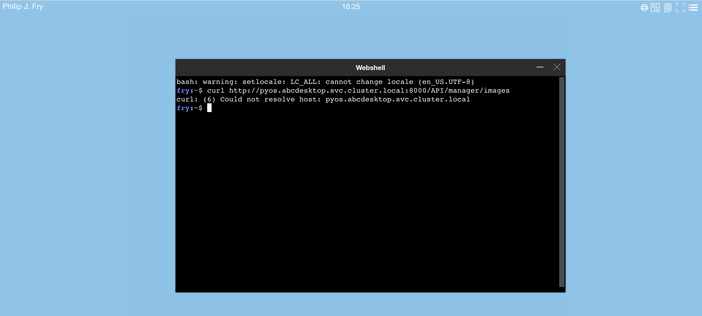
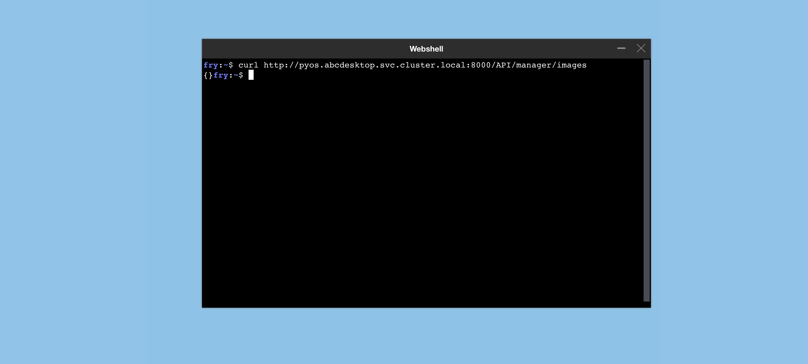

NetworkPolicy
Goals
- Apply network policies to control traffic flow at the IP address or port level of abcdesktop pods, this includes user's pods.
Authors
jpxavier-oio has designed the network policy for abcdesktop.io
Requirements
- You need to have a Kubernetes cluster, and the kubectl command-line tool must be configured to communicate with your cluster. It is recommended to run this tutorial on a cluster with at least two nodes.
- Network policies are implemented by the network plugin. To use network policies, you must be using a networking solution which supports NetworkPolicy.
NetworkPolicy description
There are two sorts of isolation defined in abcdesktop : the NetworkPolicy rights and the NetworkPolicy permits.
-
The NetworkPolicy
rightscontainsegressandingressfor pod selected by tag.rightsmeans access (ingress) to this pod and access (egress) from this pod. To define ip filter for user's pod, you need to set egress NetworkPolicy. -
The NetworkPolicy
permitscontainsegressto a pod selected by tag. The NetworkPolicypermitsmeans permit access to this pod.
NetworkPolicy example
The NetworkPolicy examples describe the network policies for the internal memcached pod and the user's pods.
NetworkPolicy rights and permits for the memcached.
The memcached service is listening on TCP port 11211.
The NetworkPolicy for memcached service rights, named memcached-rights, allows pods with label run: memcached-od to expose the TCP port 11211.
apiVersion: networking.k8s.io/v1
kind: NetworkPolicy
metadata:
name: memcached-rights
namespace: abcdesktop
spec:
podSelector:
matchLabels:
run: memcached-od
policyTypes:
- Ingress
ingress:
- ports:
- protocol: TCP
port: 11211
from:
- podSelector:
matchLabels:
netpol/memcached: 'true'
- namespaceSelector:
matchLabels:
name: kube-monitor
podSelector:
matchLabels:
netpol/metrics: 'true'
The NetworkPolicy for memcached service permits, named memcached-permits, allows all pods with label netpol/memcached: 'true' to reach the TCP port 11211 to pods with label run: memcached-od.
apiVersion: networking.k8s.io/v1
kind: NetworkPolicy
metadata:
name: memcached-permits
namespace: abcdesktop
spec:
podSelector:
matchLabels:
netpol/memcached: 'true'
policyTypes:
- Egress
egress:
- ports:
- protocol: TCP
port: 11211
to:
- podSelector:
matchLabels:
run: memcached-od
---
NetworkPolicy rights and permits for the user's pods.
The ocuser pod is listening on TCP ports :
- 4714
- 6081
- 29780
- 29781
- 29782
- 29783
- 29784
- 29785
- 29786
The network policy for ocuser's pods rights is named ocuser-rights. It allows pods with label type: 'x11server' to expose the previous TCP ports.
The egress network policy allows :
- dns queries to kube-dns
- http to any web site
- https to any web site
- kerberos auth to any kdc
apiVersion: networking.k8s.io/v1
kind: NetworkPolicy
metadata:
name: ocuser-rights
namespace: abcdesktop
spec:
podSelector:
matchLabels:
type: 'x11server'
policyTypes:
- Ingress
- Egress
ingress:
- from:
- podSelector:
matchLabels:
netpol/ocuser: 'true'
ports:
- protocol: TCP
port: 4714
- protocol: TCP
port: 6081
- protocol: TCP
port: 8000
- protocol: TCP
port: 29780
- protocol: TCP
port: 29781
- protocol: TCP
port: 29782
- protocol: TCP
port: 29783
- protocol: TCP
port: 29784
- protocol: TCP
port: 29785
# spawner_service_tcp_port
- protocol: TCP
port: 29786
egress:
# pod user can run dns query to all kube-system
- ports:
- protocol: TCP
port: 53
- protocol: UDP
port: 53
to:
- namespaceSelector:
matchLabels:
name: kube-system
podSelector:
matchLabels:
k8s-app: kube-dns
# permit www website from pod user
- ports:
- protocol: TCP
port: 443
- protocol: TCP
port: 80
# permit kerberos auth kinit
- ports:
- protocol: UDP
port: 88
- protocol: TCP
port: 88
The network policy for ocuser's pods permits is named ocuser-permits. It allows pods with label netpol/ocuser: 'true' to reach the user's pods services.
apiVersion: networking.k8s.io/v1
kind: NetworkPolicy
metadata:
name: ocuser-permits
namespace: abcdesktop
spec:
podSelector:
matchLabels:
netpol/ocuser: 'true'
policyTypes:
- Egress
egress:
- to:
- podSelector:
matchLabels:
type: 'x11server'
ports:
# default pulseaudio websocket audio without webrtc gateway
- protocol: TCP
port: 4714
# vnc websockify
- protocol: TCP
port: 6081
# reserved
- protocol: TCP
port: 29780
# xterm_tcp_port
- protocol: TCP
port: 29781
# printerfile_service_tcp_port
- protocol: TCP
port: 29782
# file_service_tcp_port
- protocol: TCP
port: 29783
# broadcast_tcp_port
- protocol: TCP
port: 29784
# reserved
- protocol: TCP
port: 29785
# spawner_service_tcp_port
- protocol: TCP
port: 29786
Apply the default netpol-default.yaml file
To apply the network policies run the command :
kubectl apply -f https://raw.githubusercontent.com/abcdesktopio/conf/main/kubernetes/netpol-default.yaml
The command returns
networkpolicy.networking.k8s.io/abcdesktop-rights created
networkpolicy.networking.k8s.io/memcached-rights created
networkpolicy.networking.k8s.io/memcached-permits created
networkpolicy.networking.k8s.io/mongodb-rights created
networkpolicy.networking.k8s.io/mongodb-permits created
networkpolicy.networking.k8s.io/speedtest-rights created
networkpolicy.networking.k8s.io/speedtest-permits created
networkpolicy.networking.k8s.io/pyos-rights created
networkpolicy.networking.k8s.io/pyos-permits created
networkpolicy.networking.k8s.io/nginx-rights created
networkpolicy.networking.k8s.io/nginx-permits created
networkpolicy.networking.k8s.io/ocuser-rights created
networkpolicy.networking.k8s.io/ocuser-permits created
networkpolicy.networking.k8s.io/authentication-permits created
networkpolicy.networking.k8s.io/ldap-permits created
networkpolicy.networking.k8s.io/ldap-rights created
networkpolicy.networking.k8s.io/smtp-permits created
networkpolicy.networking.k8s.io/https-permits created
networkpolicy.networking.k8s.io/storage-permits created
networkpolicy.networking.k8s.io/coredns-permits created
networkpolicy.networking.k8s.io/apiserver-permits created
networkpolicy.networking.k8s.io/graylog-permits created
Test the network policies
- Login to your abcdesktop
- Open a webshell and run a curl command.
curl http://pyos.abcdesktop.svc.cluster.local:8000/API/manager/images
This http request is denied by the network policy and you should get an error message

You should get an error message, the user's pod can't reach https://pyos.abcdesktop.svc.cluster.local:8000/API.
Disable the network policies
To disable the network policies, run the kubectl delete command :
kubectl delete -f https://raw.githubusercontent.com/abcdesktopio/conf/main/kubernetes/netpol-default.yaml
- Login to your abcdesktop
- Open the web shell to run the same curl command
curl http://pyos.abcdesktop.svc.cluster.local:8000/API/manager/images
You should get a json document as http response
{}

You may need to update the netpol-default.yaml file with your own values.